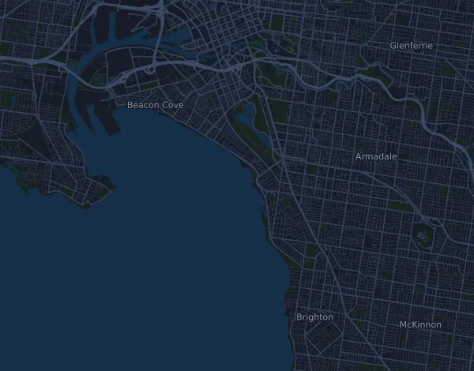

Melbourne Marathon 42,2 km
- Distanz
- 42,2 km
- Höhenmeter
- ↑ 599 m
- Höchster Punkt
- 32 m ü. M.
- Untergrund
- Straße
- Profil
- Leicht wellig
- Verpflegungsstellen
- 12
Höhenprofil
Mit Mila vorbereiten
Mila ist eine Lauf-Coach-App. Nimmst du einen Lauf in deinen Plan auf, plant der Coach deine Wochen bis zum Start nach deiner Form und gibt dir eine Zielzeitprognose und einen Plan für Tempo, Getränke und Verpflegung auf der Strecke.

Der richtige Lauf am richtigen Tag.
Die Strecke

Über die Strecke
Nike Melbourne Marathon ist ein Straßenlauf in Melbourne, Australien, über 42,2 km. Die Strecke hat insgesamt 599 Höhenmeter bergauf und 584 bergab, 14 m pro km, und ist damit leicht wellig. Der höchste Punkt liegt auf 32 m ü. M., der tiefste auf 1 m.
Der größte Anstieg beginnt bei km 39,9: 27 Höhenmeter auf 770 m mit durchschnittlich 3,5 % Steigung, bis auf 32 m.
Der Veranstalter nennt 12 Verpflegungsstellen, die erste bei km 4,8 und die letzte bei km 41,0.
In der Mila-App beschreibt der Coach die Strecke ausführlich in deiner Sprache und plant dein Pacing und deine Verpflegung dafür.
Anstiege
| Beginnt bei | Länge | Höhenmeter | Steigung | Gipfel (m ü. M.) |
|---|---|---|---|---|
| km 39,9 | 770 m | 27 m | 3,5 % | 32 |
Vor dem Start
Verpflegungsstellen
| Bei | Angebot |
|---|---|
| km 4,8 | Wasser |
| km 7,0 | Wasser, Sportgetränk |
| km 10,1 | Wasser, Sportgetränk |
| km 14,0 | Wasser |
| km 16,5 | Wasser, Sportgetränk |
| km 19,0 | Wasser, Sportgetränk |
| km 22,0 | Wasser |
| km 25,0 | Wasser, Gels |
| km 28,0 | Wasser, Sportgetränk |
| km 33,0 | Wasser, Sportgetränk, Gels |
| km 36,5 | Wasser |
| km 41,0 | Wasser, Sportgetränk |
Quelle: melbournemarathon.com.au, abgerufen am 15. Oktober 2026
Pace-Tabelle
Melbourne Marathon 42,2 km in 3:00:00 – Pace pro km und Zwischenzeiten
4:16 pro km · km 10: 42:39 · km 21,1: 1:30:00 · km 30: 2:07:58 · km 40: 2:50:37 · Ziel: 3:00:00
Melbourne Marathon 42,2 km in 3:30:00 – Pace pro km und Zwischenzeiten
4:59 pro km · km 10: 49:46 · km 21,1: 1:45:00 · km 30: 2:29:17 · km 40: 3:19:03 · Ziel: 3:30:00
Melbourne Marathon 42,2 km in 4:00:00 – Pace pro km und Zwischenzeiten
5:41 pro km · km 10: 56:52 · km 21,1: 2:00:00 · km 30: 2:50:37 · km 40: 3:47:29 · Ziel: 4:00:00
Melbourne Marathon 42,2 km in 4:30:00 – Pace pro km und Zwischenzeiten
6:24 pro km · km 10: 1:03:59 · km 21,1: 2:15:00 · km 30: 3:11:57 · km 40: 4:15:55 · Ziel: 4:30:00
Die Zeiten setzen ein gleichmäßiges Tempo auf der ganzen Strecke voraus. Das ist reine Rechnung, keine Prognose: an Anstiegen, im Gedränge und an Verpflegungsstellen schwankt das Tempo.
Häufige Fragen
Wann findet Melbourne Marathon 42,2 km statt?
Das Datum der nächsten Ausgabe steht noch nicht fest. Zuletzt fand der Lauf am 11. Oktober 2026 statt.
Wie lang ist Melbourne Marathon 42,2 km und wie viele Höhenmeter hat die Strecke?
Der Lauf ist 42,2 km lang mit 599 Höhenmetern bergauf und 584 bergab. Der höchste Punkt liegt auf 32 m ü. M.
Wie ist die Strecke von Melbourne Marathon 42,2 km?
Die Strecke ist leicht wellig, mit durchschnittlich 14 Höhenmetern pro km. Sie hat einen Anstieg ab 25 Höhenmetern, bei km 39,9: 27 Höhenmeter auf 770 m. Sie führt vom Start zu einem Ziel an einem anderen Ort. Der Untergrund ist Straße.
Gibt es Verpflegungsstellen bei Melbourne Marathon 42,2 km?
Ja. Der Veranstalter nennt 12 Verpflegungsstellen: km 4,8 (Wasser); km 7,0 (Wasser, Sportgetränk); km 10,1 (Wasser, Sportgetränk); km 14,0 (Wasser); km 16,5 (Wasser, Sportgetränk); km 19,0 (Wasser, Sportgetränk); km 22,0 (Wasser); km 25,0 (Wasser, Gels); km 28,0 (Wasser, Sportgetränk); km 33,0 (Wasser, Sportgetränk, Gels); km 36,5 (Wasser); km 41,0 (Wasser, Sportgetränk).
Wie teile ich mir Melbourne Marathon 42,2 km ein?
Lauf eher mit gleichmäßiger Anstrengung als mit gleichmäßigem Tempo: Lass das Tempo an den Anstiegen sinken, hol es zurück, wo es flacher wird, und halte dich auf den ersten Kilometern zurück. Die größten Anstiege beginnen bei km 39,9. In Mila bekommst du einen Pace-Plan für genau diese Strecke, passend zu deiner Form.
Ähnliche Läufe
Weitere Läufe in der Nähe
- Gold Coast Marathon 42,7 km4. Juli 2027 · Southport, Gold Coast, Australien
- Buffalo Stampede 100km (Bright Ultra SkyMarathon)20. März 2027 · Bright, Australien
- Ultra-Trail Australia by UTMB – UTA100 101 km15. Mai 2027 · Katoomba, Australien
- Melrose Great Ocean Road Marathon (44km)16. Mai 2027 · Lorne, Australien
- Six Foot Track Marathon 45 km13. März 2027 · Katoomba, Australien
- Voltaren City2Surf 14 km8. August 2027 · Sydney, Australien
Mit Mila vorbereiten
Der richtige Lauf am richtigen Tag.
Die Angaben stammen aus der Streckendatei und den Informationen des Veranstalters. Prüfe Datum, Startzeiten und Regeln beim Veranstalter.
Mila ist nicht mit dem Veranstalter oder den Sponsoren des Laufs verbunden und wird von ihnen weder gesponsert noch empfohlen. Namen und Marken gehören ihren Inhabern. Veranstalter oder Rechteinhaber? Änderung oder Entfernung beantragen